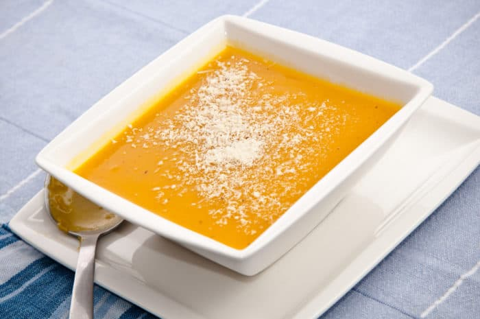
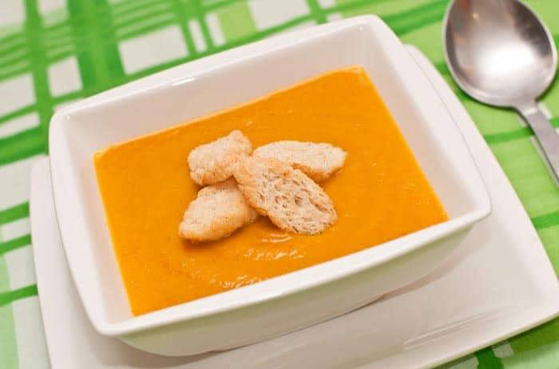
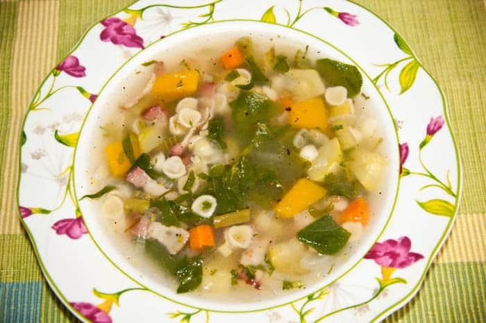
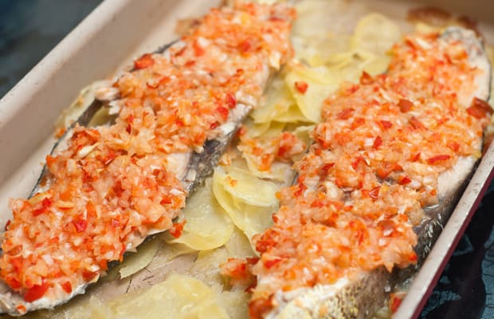
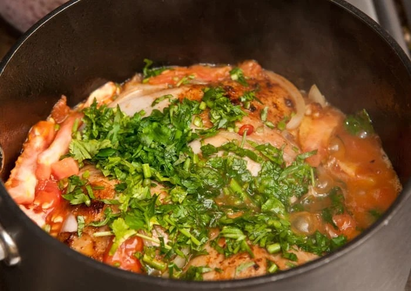
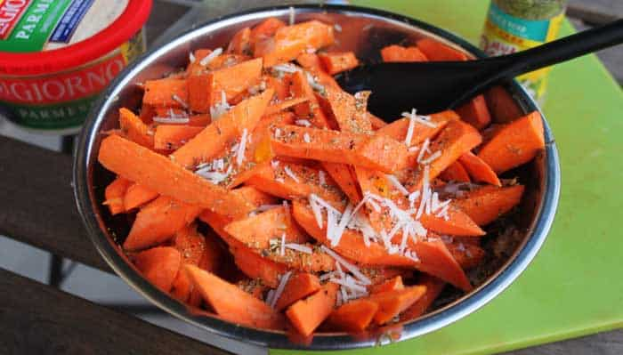
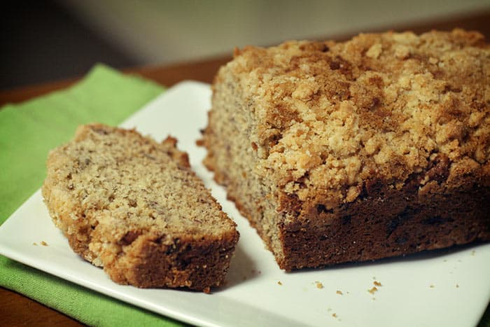

Beneficios de una Alimentación Saludable Conocé los beneficios que aporta una alimentación saludable y los consejos para poder llevarla a cabo. Además, enterate cuáles son los tres pilares principales para vivir saludablemente. Tips y recomendaciones vittal. En el marco del Día Mundial del Nutricionista, que se celebra el 11 de agosto, compartimos las ventajas que otorga una dieta sana y completa. La nutrición es muy importante para la calidad de vida de las personas, siendo tres los pilares que ayudan a mantener una buena salud: el descanso, la alimentación y el ejercicio. La cuestión radica en aprender a equilibrar estas tres funciones. Una alimentación saludable implica consumir diferentes grupos de alimentos en cada comida para lograr un aporte equilibrado de nutrientes y proteínas. BENEFICIOS DE UNA ALIMENTACIÓN SALUDABLE Disminución del riesgo de padecer enfermedades cardiovasculares a largo plazo, ayudando a reducir el colesterol (LDL). Presión arterial en niveles normales. Reducción del deterioro de la memoria y otras funciones cerebrales. Se obtiene la energía necesaria para realizar las actividades cotidianas. Mejora el sistema inmunológico. El consumo adecuado de calcio fortalece los huesos y evita la osteoporosis. TIPS Y RECOMENDACIONES Para cumplir con un correcto esquema de alimentación, es necesario realizar en todos los casos las cuatro comidas recomendadas durante el día: desayuno, almuerzo, merienda y cena. El desayuno es la comida más importante, por lo que tendrá que ser lo más nutritiva posible (proteínas y fibras naturales). En el almuerzo, se puede optar por alimentos bajos en grasas saturadas y que contengan grasas omega 3 (por ejemplo, las nueces). También hay que reemplazar la comida de media mañana, como galletitas, chocolates, papas fritas, etc., por snacks saludables o frutas frescas. El cambio se nota cuando comenzamos a modificar lo que comemos, eligiendo alimentos saludables y dando prioridad a los productos frescos y no a los procesados, según lo especificado por la doctora. La mayor parte de alimentos consumidos durante el día deben ser frutas, verduras y hortalizas, sin dejar de lado la carne y el pescado. El objetivo es tratar de tener un equilibrio entre los carbohidratos, proteínas y grasas. Las frutas, verduras y hortalizas son las que nos van a proporcionar gran parte de las vitaminas, minerales y fibra, nutrientes fundamentales para el normal desarrollo del organismo. Estos productos deben ser cocinados siempre al vapor, la plancha o al horno, dejando de lado las frituras y el exceso de aceites. Saber cocinar ahorra calorías y mejora el sabor de nuestras comidas. El consumo de fibras es muy importante para regular el tránsito intestinal y brindar la sensación de saciedad, lo cual ayudará a no consumir más calorías. En este proceso el agua debe ser la bebida principal, dejando de lado las bebidas no dietéticas y el alcohol. Se recomiendan 2 litros de agua por día. En necesario también limitar el consumo de sal y azúcares, ya que los excesos de estos contribuyen a la hipertensión y la obesidad. La OMS sugiere ingerir entre el 20 y 35% de grasas total al día. Calorías recomendadas por día: * Para una mujer promedio, entre 1.800 y 2.000. * Para un hombre, entre 2.000 y 2.200.
| Imagen | Nombre | Informacion |
|---|---|---|
|  | Crema de calabaza:| Mi favorita (y la de muchos), sencilla de preparar, súper alimenticia y calientita para cuando
hace
fresquito. |
|
|  | Crema de zanahoria: | Otra maravillosa crema llena de vitaminas para tu cuerpo. Esta receta tiene un toque mágico que la vuelve alucinante. |
|  | Sopa de verduras: | Una de las sopas más sencilla y nutritivas que existen. Se vale usar cualquier verdura que tengas en tu refrigerador. |
|  | Pescado sudado al horno: | El pescado de por sí es un alimento sano. Si lo horneas y le pones algunas verduras y patatas, tienes un plato delicioso. |
|  | Pollo entomatado con hierbas: | Un sencillo y delicioso pollo estofado cocinado en sus propios jugos. ¡Prácticamente se cocina solo! |
| Arroz con verduras: | Nada más saludable que una ración de arroz con verduras. Úsalo para acompañar filetes a la plancha o estofados como el de arriba. | |
|  | Batatas al horno: | El sustituto de las patatas fritas. Te sirven como snack para cualquier momento del día. |
|  | Pan sin gluten: | Otra forma de hacer pan saludable, ideal para quienes tienen alergia al gluten. |
| Panqueques de banana: | De las cientos de recetas de panqueques que hay, esta de bananas, aparte de deliciosa, es saludable y nutritiva. | Imagen | Nombre | Informacion |